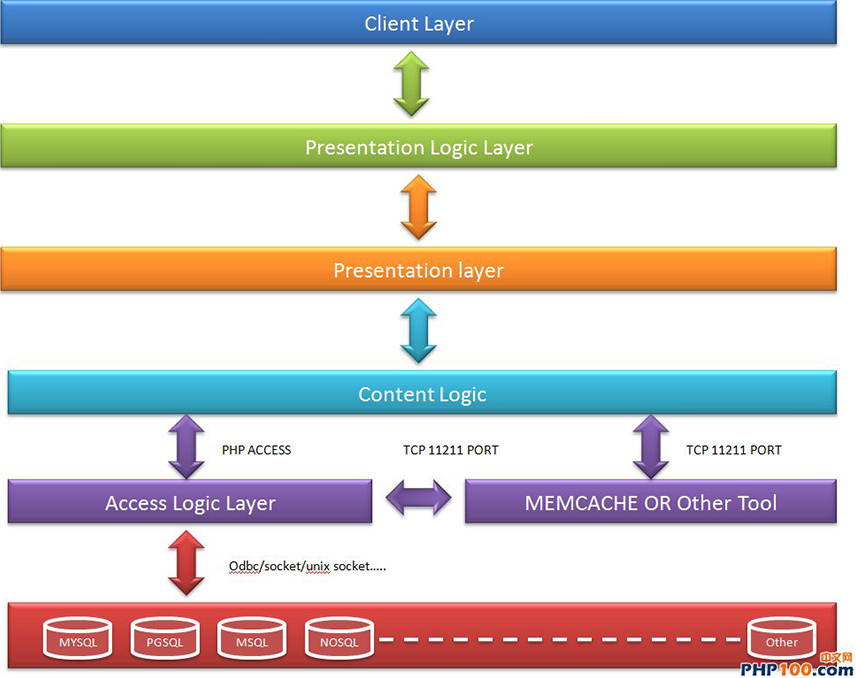
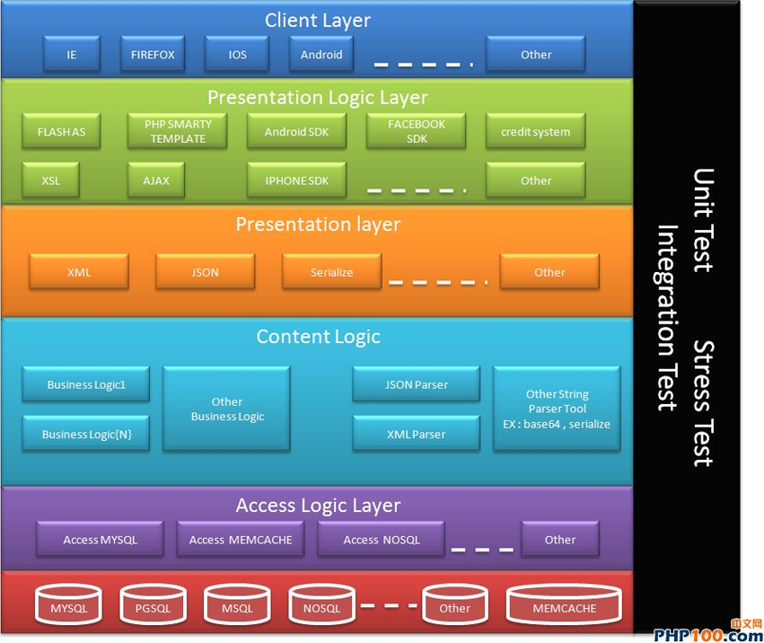
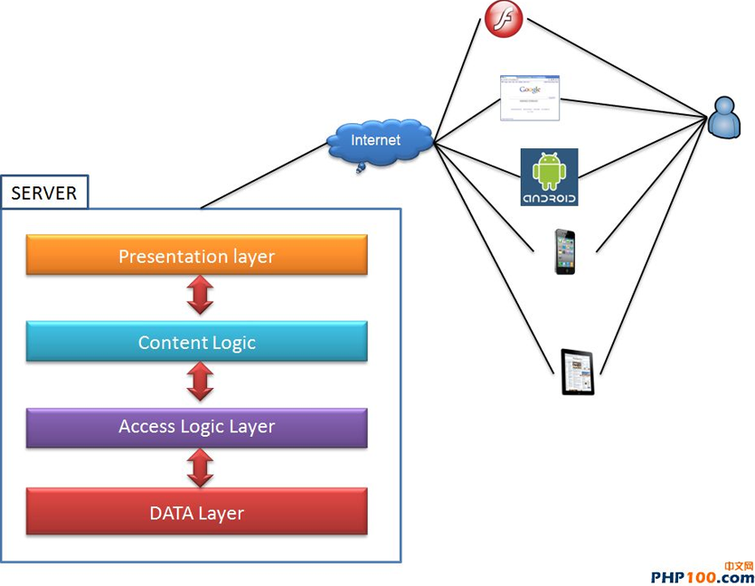

PHP系统设计与云框架


这几年我比较少写 PHP 了.
有阵子很迷它, 但是因为工作关系, 把较多的时间花在网络封包和数据库的分析工作上.而且因为年记较大了所以也很难找到写程序的工作多 半都在做工程师的 “工头”对于这几年 PHP 的变化我来不及参与.在这裡收集这几年对 PHP 的变化, 写篇心得过过本人自己的乾隐:回顾您以往 的职业生涯, 您有好好的管理您写的 CODE 吗?还是每次都写到需求超级肥大了, 才延伸出一大堆的程序码管理问题.在这裡本人设计一个开发框 架的架构, 让你的程序更简洁而且让你的程序更有条有理的被应用.当然这些架构教程我己经简化很多, 如果放入太多的设计反而会得到反效果. 如果您是比较重口味的 PHP 设计者, 先说声报歉了.如果您常为了需求肥大难以管理你的程序,这篇文章对您来说会是个值得参考的文章, 至少 它有著我十几年的需求开发经验.
一.常见的 PHP 应用的架构:
在往下教程下去前, 本人先定义一些名词, 以方便大家接下去阅读教程.
DB :这一块不用多介绍, 我相信大家对 DB 的经验独道, 我们直接跳过去.
Access Layer :这一块全部都是放一些 Access Logic 在裡头, 主要的工作是负责跟 DB 还有 MEMCACHE 沟通, 你可以使用现成的开发框架达成这 一层的目地, 也可以自己开发.但是这些逻辑建议您都保留在这一层.MEMCACHE :这一块主要是做为分散式架构的存取层, 大家有没有注意到一件 事?它是走 TCP 11211 PORT .它可以用在什麽地方?
a.让你可以把从 DB 的资料捞到快取一份到 MEMCACHE ,来减轻资料库的工作负担, 这在大型而且流量很高的系统上, 它辨演很重要的角色就是可 以减轻 DB 的工作量.我们这裡不多介绍 Memcahe 的使用及方式, 您可以多参考官方网站或其它网络上的教程.
b.有一些不用储存用完就不要的资料, 也可以利用 memcache 直接存取不用再交给 DB 去处理.
c.注意一件事:在过去裡我的下属们在使用它时常会犯一个错就是烂用 Memcache , memcache 本身是一个 TCP 的服务在单台 linux 伺服器下最多只能使用1024个请求, 当然你可以用 ulimit 提高它, 但是请先了解它的本质用对 地方.它本身并不能做为程序本身加快程序效能的工具, 但是它是一个可以做到分散式的存取架构, 并且可以减轻 DB 负担的工具, 的好用工具. 所以在使用它时要选对时机, 千万不要烂用.
Access Layer :这一层的工作主要是存取资料层的逻辑, 我将会2.会有更详细的说明.
二.功能方块介绍:
到这裡我们必需要将图裡的方块切的更细让大家理解请耐心的看完下一张图:
1. 数据库逻辑层 :
Access Logic Layer 主要的工作是做为与 DB 和 Content Logic 沟通的区块, 在这裡本人建议大家在设计物件库或函式库前, 先参考这个架构.
